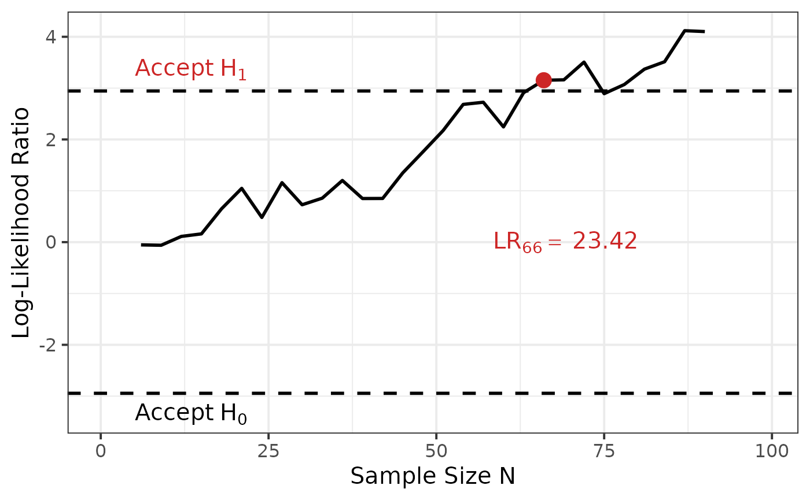

Sequential One-Way ANOVA
Meike Steinhilber
2025-12-15
Source:vignettes/one_way_anova.Rmd
one_way_anova.RmdOverview
The sprtt package is a sequential
probability ratio
tests toolbox
(sprtt). This vignette describes the theoretical
background of these tests.
Other recommended vignettes cover:
a general guide, how to use the package and
an extended use case.
What is a sequential test procedure?
With a sequential approach, data is continuously collected and an analysis is performed after each data point, which can lead to three different results (A. Wald, 1945):
The data collection is terminated because enough evidence has been collected for the null hypothesis (H0).
The data collection is terminated because enough evidence has been collected for the alternative hypothesis (H1).
The data collection will continue as there is not yet enough evidence for either of the two hypotheses.
Basically it is not necessary to perform an analysis after each data point — several data points can also be added at once. However, this affects the sample size (N) and the error rates (Schnuerch et al., 2020).
The efficiency of sequential designs has already been examined. Reductions in the sample by 50% and more were found in comparison to analyses with fixed sample sizes (Schnuerch et al., 2020; A. Wald, 1945). Sequential hypothesis testing is therefore particularly suitable when resources are limited because the required sample size is reduced without compromising predefined error probabilities.
What is the sequential one-way ANOVA?
The sequential one-way fixed effects ANOVA is based on the Sequential Probability Ratio Test (SPRT) by Abraham Abraham Wald (1947), which is a highly efficient sequential hypothesis test. It can be used instead of t-tests if the means of two or more groups are compared. For detailed information see the public preprint (Steinhilber et al., 2023). Note: keep in mind that the repeated measurement ANOVA is not implemented yet in the sprtt package.
How to plot the ANOVA results
Scenario 1: Perfect data
In this case, we have data that are perfectly balanced and in a perfect sampling order. Here, we can use the default value of the ‘plot’ argument ‘single’ or we can choose ‘balanced’.
set.seed(333)
data <- sprtt::draw_sample_normal(3, f = 0.25, max_n = 30)
# calculate the SPRT -----------------------------------------------------------
anova_results <- sprtt::seq_anova(y~x, f = 0.25, data = data, plot = TRUE)
anova_results <- sprtt::seq_anova(y~x, f = 0.25, data = data, plot = TRUE, seq_steps = "single")
anova_results <- sprtt::seq_anova(y~x, f = 0.25, data = data, plot = TRUE, seq_steps = "balanced")
# plot the results -------------------------------------------------------------
sprtt::plot_anova(anova_results)
Scenario 2: Unbalanced data in an imperfect order
In this case, we have a data set with unbalanced sample sizes between the groups and the data points are not in a perfect order. Because the order is not perfect, it does not make sense to use the ‘balanced’ option. Because the first data points (2*k_groups) are not equally distributed between the groups (some groups have less than 2 data points), the option ‘single’ would output an error.
Thus, we need to define the sequential steps ourselves.
Here, we start later (after 12 data points) but then calculate the LR after every single data point.
set.seed(333)
data <- sprtt::draw_sample_normal(3, f = 0.25, max_n = 50, sample_ratio = c(1,2,2))
data <- data[sample(nrow(data)),] # destroy the perfect order of the data
# calculate the SPRT -----------------------------------------------------------
anova_results <- sprtt::seq_anova(y~x, f = 0.25, data = data,
plot = TRUE,
seq_steps = 12:nrow(data) # we start with the first 12 data points instead of the first 6
)
# plot the results -------------------------------------------------------------
sprtt::plot_anova(anova_results,
labels = TRUE,
position_labels_x = 0.2,
position_labels_y = 0.2,
position_lr_x = 0.1,
position_lr_y = -1.8,
font_size = 20,
line_size = 1,
highlight_color = "darkblue"
)